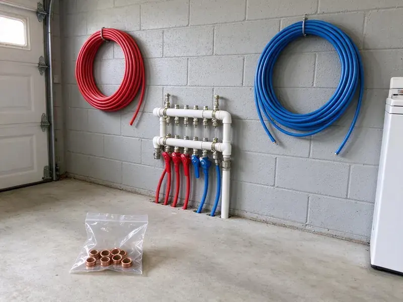

Water Heater Expansion Tank Installation in Ogden, UT
Extend the life of your water heater and prevent costly repairs with a proper expansion tank setup from BPK Plumbing in Ogden, UT.
- Prompt, Local Service
- Code-Compliant Mounting
- Licensed Plumbers
- Upfront Pricing

Protect Your Tank and Fixtures With an Expansion Tank in Ogden, UT.
Our licensed plumbers are standing by to install your expansion tank safely and efficiently.
Professional Water Heater Expansion Tank Installation in Ogden, UT
At BPK Plumbing, we understand the plumbing challenges homes face in Ogden, UT. Our experienced technicians make sure your water heater expansion tank is correctly sized and installed according to local plumbing codes, safeguarding your investment and providing peace of mind.
Our expertise includes:
- Tank sizing based on heater gallons, pressure and water temperature
- Professional installation for all water heater types
- Preventing excessive pressure in plumbing systems

Additional Plumbing Installation Services in Ogden, UT
We install water heaters, pumps, lines, and fixtures across Ogden, UT with careful, permitted work that passes inspection the first time.


Customers
Why Choose BPK Plumbing for Water Heater Expansion Tank Installation in Ogden, UT?
Without an expansion tank, the thermal expansion of heated water can create serious pressure, leading to leaks, burst pipes and damage to your water heater itself.
- Full System Check, We inspect the PRV and relief valve while we are there.
- System Protection, An expansion tank absorbs excess water pressure, relieving strain on your water heater and pipes.
- Prevent Leaks, It lowers the risk of leaks and bursts caused by high pressure, saving you from potential water damage.
Citywide Coverage
Every neighborhood in Ogden has homes with pressure regulators that create closed systems, and we serve all of them. We also install expansion tanks for townhomes, condos and light commercial buildings.
Experienced Team
Each BPK Plumbing technician is trained to accurately assess your water heating system and recommend the right expansion tank, for a reliable, efficient installation every time for our Ogden customers.
Safety-First Approach
Our careful approach means your expansion tank is installed correctly, preventing hazards and protecting your home's plumbing system from excessive pressure.
Trusted Certified Ogden Plumbing Services Professionals
At BPK Plumbing, we take pride in providing licensed, certified plumbing services throughout Ogden, UT. Backed by recognized industry credentials, our experienced plumbers combine technical skill with genuine customer care. Whether it is repair, installation, or maintenance, we follow strict safety and quality standards to deliver long-lasting results you can trust.
Call Us Now PHCC Plumbing Contractor Recognition
PHCC Plumbing Contractor Recognition Better Business Bureau (BBB) Accreditation
Better Business Bureau (BBB) Accreditation Angi Certified Pro
Angi Certified Pro ISO 9001 Quality Management Certification
ISO 9001 Quality Management CertificationReliable Water Heater Expansion Tank Installation Services in Ogden, UT
Expansion Tank Installation Cost Comparison in Ogden, UT
Adding an expansion tank during a water heater replacement is the most cost-effective approach because the water is already off and the piping is open. Installing one as a standalone job costs a bit more in labor but still pays off by protecting the heater. Larger tanks, attic installs and PRV replacement add to the total. We provide a clear price before any work begins.

New Expansion Tank Installation in Ogden
If your home has a pressure reducing valve and no expansion tank, the water heater is probably seeing a pressure spike every heating cycle. We install a new tank on the cold water supply near the heater using a tee and short nipple. The air side is precharged to match your static pressure, usually between 50 and 70 psi. We then run the heater and watch the gauge to confirm pressure stays steady.
Expansion Tank Sizing for Large Water Heaters in Ogden
A standard 2 gallon tank works for many 40 and 50 gallon heaters at moderate pressure. Larger heaters, higher incoming pressure or high-capacity systems may need a 4.5 gallon tank or larger. We use manufacturer sizing charts that factor in heater volume, supply pressure and temperature setting. Correct sizing keeps the tank from over-flexing and wearing out early.
Tankless Water Heater Expansion Tank Integration in Ogden, UT
While tankless water heaters typically have different pressure dynamics, an expansion tank can still be beneficial or even required in certain setups or by local codes in Ogden, UT. We assess your tankless unit and plumbing configuration to determine whether an expansion tank is necessary, especially with higher flow rates or a recirculation pump. Our technicians are experienced with integrating expansion tanks cleanly with many tankless models, keeping them running efficiently and protecting your plumbing system.
Pressure Reducing Valve and Expansion Tank Pairing in Ogden
Many homes see high incoming pressure, so pressure reducing valves are widespread. The PRV protects your fixtures but also turns your plumbing into a closed system, which makes an expansion tank necessary. We test the PRV output and replace it if it is creeping or failing. Pairing a healthy PRV with a correctly charged expansion tank gives you stable pressure throughout the house.
Standard Water Heater Expansion Tank Installation in Ogden
Our standard installation service covers traditional tank-style water heaters, with the expansion tank correctly tied into your cold water supply line. We use high-quality, pre-charged diaphragm tanks designed to absorb thermal expansion efficiently. This keeps excessive pressure from building up in your system, which is key for prolonging the life of your water heater and preventing damage to fixtures and appliances. We always test the system carefully after installation to confirm proper performance and compliance with local Ogden regulations.
Brands and Tank Materials in Ogden, UT
We install potable-rated thermal expansion tanks from brands such as Watts, Amtrol and A.O. Smith. Potable tanks use a butyl diaphragm and a lined interior so water never touches bare steel. Water softeners are a common fixture in Utah homes, and many newer houses are built with a softener loop already in place. Stainless steel connections resist corrosion from hard or aggressive water. We avoid tanks designed only for hydronic heating, since they are not approved for drinking water.

Expansion Tank Replacement & Upgrades in Ogden
If your existing expansion tank is old, leaking or no longer working correctly, BPK Plumbing offers professional replacement in Ogden. We can also upgrade your current tank to a larger or more efficient model if your plumbing needs have changed. A failing expansion tank can cause the same pressure problems as having no tank at all. Our team will quickly diagnose the issue and install a new, high-quality tank, restoring protection to your water heating system.
Water Heater Expansion Tank Installation Near Me in Ogden, UT
When you search for 'water heater expansion tank installation near me' in Ogden, UT, BPK Plumbing is your reliable local choice. Our team is ready to respond quickly to your plumbing needs across the entire Ogden area.
Our plumbers work in Ogden every day and know how local water pressure and regulators affect water heaters. That experience lets us size your tank correctly the first time. You get a quick, clean installation and a system that stays balanced.
BPK Plumbing at a Glance
- Fully licensed plumbing team covering Ogden, UT
- Same-day appointments and 24/7 emergency response
- Clear written estimates, no hidden fees
- 4.8-star rated by 470+ Utah customers
Ogden Map
Ogden Information
- Population
- 87,267
- Area codes
- 801/385/435
- Service area
- Ogden and communities within 40 miles
- Nearby
- Layton, Salt Lake City, Logan, West Valley City
High incoming water pressure and common pressure regulators make thermal expansion a real issue for water heaters in Ogden, UT, and a properly charged expansion tank keeps that pressure under control.
Expert Services
Trust our professionals for reliable BPK Plumbing solutions in Ogden, UT.
Our Specialized Plumbing Services in Ogden, UT
At BPK Plumbing, we provide a complete range of plumbing services across Ogden, UT. From leak detection to full system installations, our team ensures fast, precise, and affordable service for both residential and commercial properties. Explore our core services below:


How Our Water Heater Expansion Tank Installation Process Works in Ogden, UT
Here is how we take care of your expansion tank from the first call to the final pressure check.
Request a Quote
Call BPK Plumbing today at (385) 543-4073 to discuss your water heater expansion tank needs. We will collect the necessary information and schedule a convenient time for an assessment.
On-Site Assessment
Our licensed plumber will visit your Ogden home to evaluate your current water heater setup and water pressure and determine the correct expansion tank size.
Professional Installation
We will carefully install the new expansion tank, making sure all connections are secure, the tank is properly precharged and the system is working correctly.
Frequently Asked Questions About Water Heater Expansion Tank Installation in Ogden
The cost for water heater expansion tank installation in Ogden typically ranges from $250 to $500, including parts and labor. This can vary based on the tank size, the complexity of the installation and any necessary plumbing changes. We provide transparent, upfront pricing after an on-site assessment.
A standalone expansion tank generally does not require a permit, but one is often included when it is installed with a new water heater. We follow local requirements on every job.
Signs of a failing expansion tank include water dripping from the tank's air valve, rust or corrosion on the tank's exterior or a water heater that frequently cycles on and off. You might also notice fluctuating water pressure or a banging sound in your pipes, which indicates excessive pressure buildup.
A typical water heater expansion tank can last anywhere from 5 to 10 years. Water softeners are a common fixture in Utah homes, and many newer houses are built with a softener loop already in place. Water quality, system pressure and installation quality all influence its lifespan, and regular inspections can help identify when a replacement is needed.
If your home has a pressure reducing valve, check valve or backflow preventer on the main, you likely have a closed system that needs one. Many local codes require it whenever a water heater is installed on a closed system.
BPK Plumbing stands behind our workmanship and the quality of the products we install. We offer a warranty on both the expansion tank itself, per the manufacturer's terms, and our installation labor. Specific warranty details will be provided at the time of service.
An expansion tank is essential in closed plumbing systems to absorb the increased water volume and pressure that occur when water is heated. Without it, thermal expansion can damage your water heater, pipes and fixtures, leading to leaks and premature system failure. Many local codes in Utah call for them.
BPK Plumbing installs high-quality expansion tanks from trusted brands like Watts, Amtrol and Zurn. We select brands known for durability and performance so your system gets the best protection. Our plumbers can recommend the best option for your water heater and plumbing setup.
What People Are Saying About Our Plumbing Experts?

Daniel K.
A pipe burst at 11 pm and they actually answered. The plumber showed up within the hour, shut everything down, and had us back to normal the next morning. Could not ask for more.
Emergency Plumbing · Layton, UT
James P.
Our commercial plumbing system had a leak under the sink, and BPK Plumbing handled it professionally. The plumbers arrived quickly and restored everything without disruption to our customers.
Commercial Plumbing · West Valley City, UT
Patricia H.
We had a slab leak that two other companies could not find. BPK Plumbing located it in under an hour, explained our options, and the price matched the quote to the dollar.
Slab Leak Repair · West Valley City, UT
Mark T.
When our office needed drain cleaning, BPK Plumbing provided quick, reliable service. The plumber arrived on time and made sure every drain flowed perfectly before leaving. Very satisfied.
Drain Cleaning · Layton, UTRobert G.
The trenchless sewer replacement saved our front yard. They walked us through the camera inspection footage first so we knew exactly what we were paying for.
Sewer Line Replacement · Ogden, UT
Emily R.
I called BPK Plumbing for plumbing repair, and the technician was fast, polite, and thorough. They explained the problem clearly and fixed it the same day. I will definitely hire them again. Highly recommended!
Plumbing Repair · Millcreek, UT